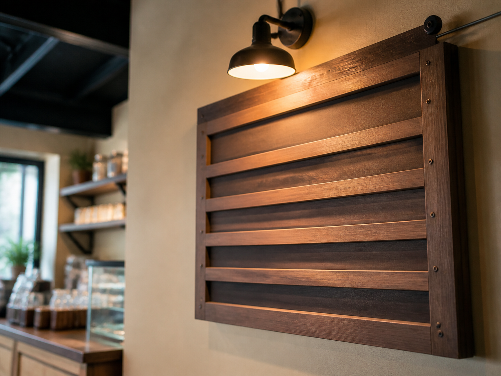

생맥주 한 잔에 127원, 12월에 메뉴판을 고칠 때 지키는 순서
12월 31일 생맥주 주세 경감이 끝나면 500mL당 약 127원의 세금이 붙습니다. 하루 40잔이면 한 달 13만 원입니다. 계산 없이 올리면 손님이 먼저 알아챕니다. 메뉴판을 고치는 순서와, 온라인에 남은 옛 가격을 정리하는 법을 정리했습니다.
12월 31일, 생맥주 주세 경감이 예정대로면 끝납니다. 500mL 한 잔으로 환산하면 세금이 약 127원 붙습니다. 작아 보이지만 이 127원은 파는 잔마다 붙습니다. 하루 40잔이면 한 달 13만 원, 100잔이면 33만 원입니다. 문제는 이 숫자를 모른 채 "업계가 500~1,000원 올린다더라"만 듣고 메뉴판을 고치는 것입니다.
오늘의 시의성: 12월 31일에 끝나는 한시 제도#
2020년 맥주 과세가 가격 기준에서 용량 기준으로 바뀌면서, 8리터 이상 용기로 유통되는 생맥주에는 일반 맥주 세율의 80%를 적용해 왔습니다. 두 차례 연장됐고, 이번에는 정부가 연장하지 않겠다는 방침입니다.
| 항목 | 내용 |
|---|---|
| 근거 | 주세법 제8조제1항제2호다목, 2026년 12월 31일까지 |
| 일반 맥주 주세 | 1㎘당 88만 5,700원 |
| 경감 생맥주 주세 | 1㎘당 70만 8,500원 |
| 종료 시 증가 | 출고 단계 1㎘당 약 25만 3,400원 = 500mL당 약 127원 |
| 업계 추정 판매가 | 500~1,000원 인상 가능성 (추정) |
127원은 출고 단계의 세금 증가분입니다. 가게가 실제로 사는 가격은 유통 단계에 따라 다르고, 최종 판매가는 사장님이 정합니다. 국회에 연장 법안이 발의돼 있어 12월 처리 결과도 확인해야 합니다.

가게 매출 손실: 계산 없이 올릴 때 생기는 일#
127원을 이유로 잔당 1,000원을 올리면, 하루 40잔 기준 한 달 104만 원이 됩니다. 원가 상승분(약 13만 원)의 여덟 배입니다. 올리는 것 자체가 문제는 아닙니다. 문제는 근거를 설명할 수 없을 때입니다. 손님은 "가격을 핑계로 올렸다"고 느끼고, 그 기억은 리뷰에 남습니다.
두 번째 손실은 온라인에 남은 옛 가격입니다. 매장 메뉴판만 바꾸면 지도 앱의 메뉴 사진, 블로그 리뷰 속 사진, 배달앱 가격, 예약 페이지 안내가 그대로 남습니다. 손님이 매장에서 "여기 가격이 다르네요"라고 말하는 순간, 그 방문은 다시 오지 않습니다.
노티스랩의 무촬영 실무 해결: 세 단계로 정리합니다#
노티스랩은 새로 촬영하지 않습니다. 이미 있는 메뉴 사진과 지난 글을 이용해 바뀐 가격을 알리는 세트를 만듭니다.
- 우리 가게 숫자로 환산합니다. 최근 한 달 생맥주 판매 잔 수를 뽑아 127원을 곱합니다. 이번 인상이 우리 가게에 미치는 월 원가가 나오면, 올릴 금액을 감이 아니라 계산으로 정할 수 있습니다. 127원 상승분을 덮는 200~300원 선이 현실적인 출발점입니다.
- 바뀌는 것과 그대로인 것을 같이 적습니다. "12월 1일부터 생맥주 한 잔 200원 인상, 안주 가격과 세트는 그대로"처럼 쓰면 손님이 받아들이는 온도가 달라집니다. 근거는 한 줄이면 충분합니다.
- 온라인 세 곳을 같은 날 고칩니다. 지도 앱 메뉴, 배달앱, 예약·문의 화면. 하루를 정해 한꺼번에 바꾸고, 옛 가격이 찍힌 사진은 새 안내로 교체합니다. 기존 사진을 그대로 쓰되 가격 안내 한 장을 더하는 방식이라, 촬영 일정을 잡지 않아도 됩니다.
첫 문의는 카톡 한 줄이면 됩니다#
바뀌는 가격과 지금 쓰는 메뉴판 사진 한 장만 카카오톡 채널 (새 탭에서 열림)로 보내 주세요. 새 가격 안내 세트와 온라인 세 곳의 수정 목록을 24시간 안에 무료로 보내드립니다. 영업 전화는 걸지 않습니다.
확인한 자료#
- 이택스뉴스, 「생맥주 주세 경감 종료 앞두고…소상공인 1만1465명 연장 촉구」, 2026년 11월 25일 — https://www.etaxnews.com/news/articleView.html?idxno=11015 (새 탭에서 열림)
- 주세법 제8조제1항제2호다목(8리터 이상 용기 생맥주, 일반 맥주 세율의 80% 적용, 2026년 12월 31일까지)
자주 묻는 질문#
잔당 127원이면 가격을 얼마나 올려야 하나요?#
정해진 답은 없습니다. 최근 한 달 판매 잔 수에 127원을 곱해 월 원가 상승분을 먼저 구하고, 그 금액을 덮는 선에서 정하는 것이 순서입니다. 하루 40잔 기준이면 잔당 200~300원이 계산상 출발점이 됩니다. 임대료와 인건비, 주변 가격에 따라 달라집니다.
연장될 수도 있나요?#
정부는 연장하지 않는 방침을 밝혔지만, 국회에 연장·확대 법안이 발의돼 있습니다. 12월 중순 이후 국회와 재정경제부 발표를 확인하고 메뉴판을 고치는 편이 안전합니다.
가격을 올리면 광고에 표시된 가격도 바꿔야 하나요?#
바꿔야 합니다. 온라인에 남은 옛 가격은 손님에게는 다른 가격표입니다. 특히 "원래 6,000원 → 5,500원"처럼 기준 가격을 쓰는 문구는 최근 판매가를 기준으로 판단되므로, 인상 후에는 이전 가격을 근거로 한 할인 문구를 내리는 편이 안전합니다.
KEEP READING
이어서 읽기
같은 흐름에서 이어지는 글입니다. 지금 매장에 해당하는 지점부터 읽으시면 됩니다.
오늘 블랙프라이데이, '반값' 간판의 기준 가격은 어제 가격이 아닙니다
할인율을 계산하는 기준 가격은 직전 가격이 아니라 최근 20일 정도의 최저 실거래가입니다. 오늘 같은 날 동네 가게와 대행사가 확인해야 할 세 줄과, 대행 계약에서 받아 둘 근거를 정리했습니다.

12월에 대행을 시작하면 성과를 잘못 봅니다 — 계약 전에 정할 다섯 가지
12월 매출은 원래 오르는 달이라 대행의 성과인지 계절 효과인지 구분이 어렵습니다. 올해 3분기 동네 가게 매출이 1년 전보다 4.36% 줄어든 해라 더 조심해야 합니다. 계약 전에 정할 다섯 가지를 정리했습니다.